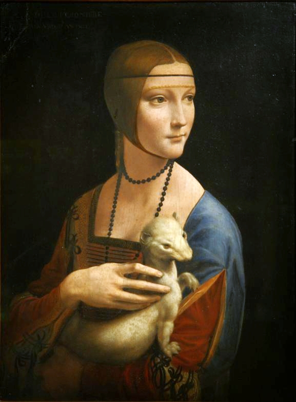
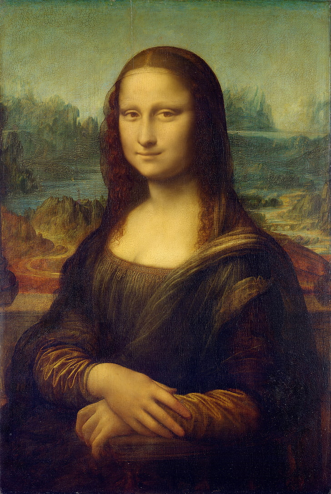

Renaşterea presupune o transformare radicală în domeniul picturii, sculpturii şi arhitecturii, marcând tranziţia de la Evul Mediu la lumea modernă. Oamenii sunt atent studiaţi.
Michelangelo - The Creation of Adam

Leonardo da Vinci - The Lady with an ErmineLeonardo da Vinci - The Last SupperSandro Botticelli - PrimaveraPaulo Occello - Battle of San Romano

Leonardo da Vinci - Mona LisaGiotto di Bondone - Kiss of JudasSandro Botticelli - The Birth of VenusRaffaello Sanzio - The School of AthensRaffaello Sanzio - The Sistine MadonnaHieronymus Bosch - The Garden of Earthly DelightsPaulo Occello - Battle of San RomanoPietro Perugino - Delivery of the Keys